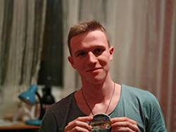

|  | Превед МедведРост модели: 270/80 см
Вес модели: 0.5 iветты
Глаза: арийский
Цвет волос: кокос кажура
О модели: ходил в качалку, теперь танкист-гитарист-приборист(нет). Личный шофер МОБИЛЫЧА. Женат, двое детей - 2 собаки. Не зовите пить если я там буду пить один. Фанат MC ПОХА и ФК Динамо-Брест на выезде зарезал двух шавок.
p.s Надо было литр брать... |